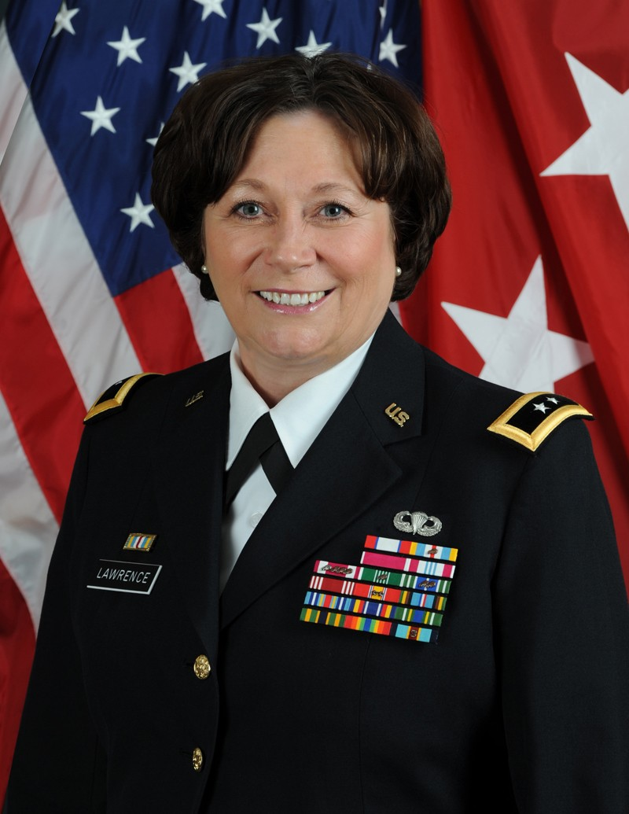
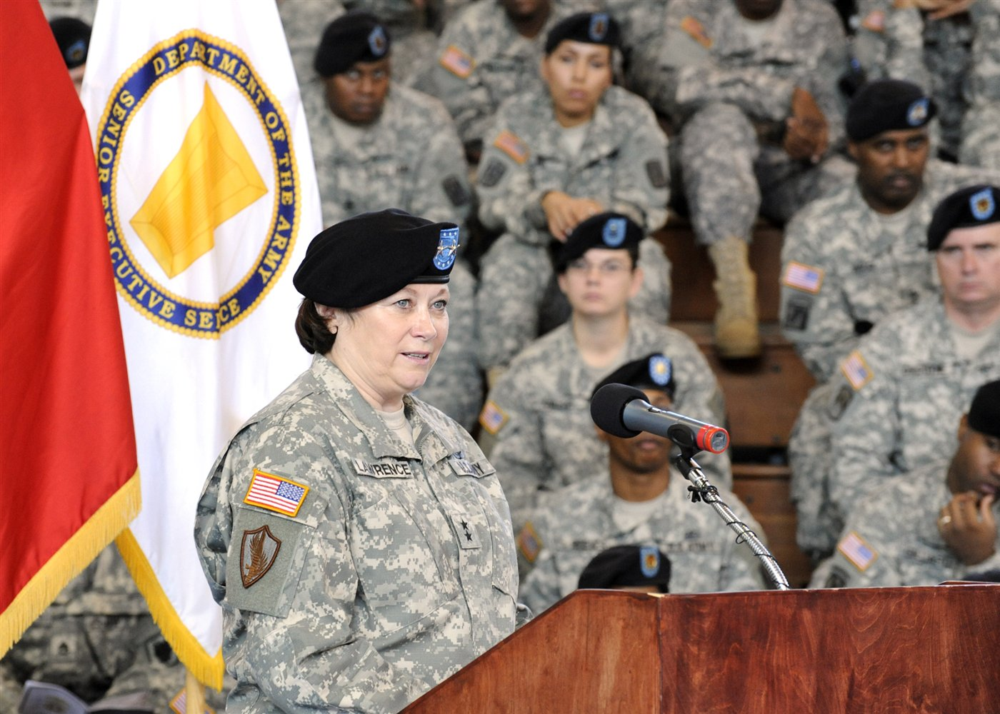
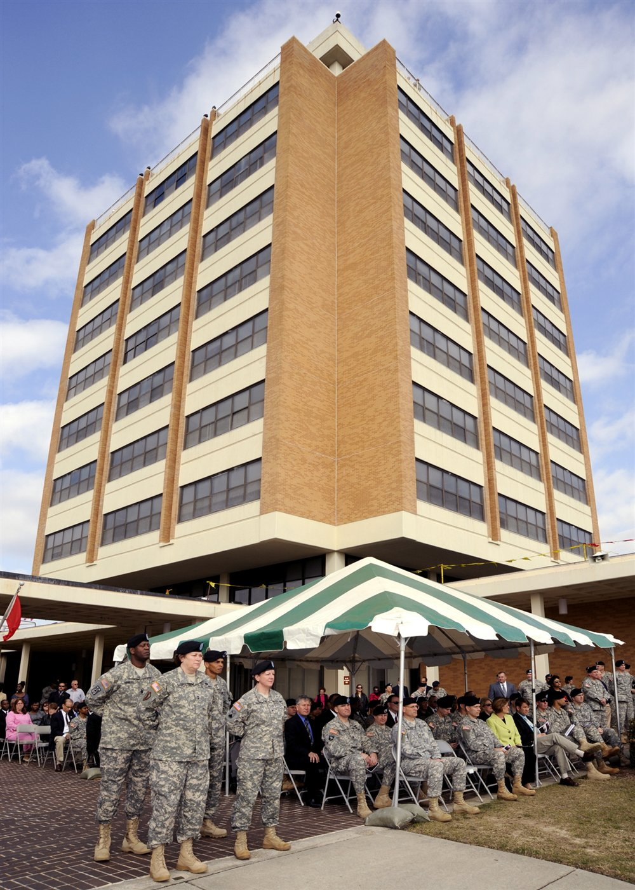
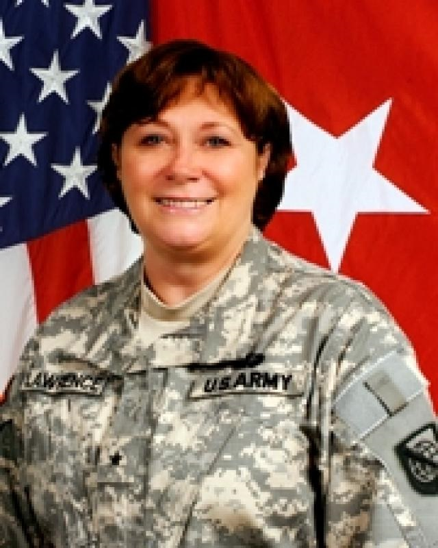

The Signal & Cyber Corps Museum Society mourns the passing of Lt. Gen. Susan S. Lawrence. She enlisted as a young Soldier from Ida Grove, Iowa, rose to three stars, and became the first woman to serve as the Army's Chief Information Officer/G-6. Across forty-one years in uniform, and many more beyond it, she devoted her career to the network that carries the Army's voice.
Susan Lawrence enlisted in the Army in 1972. She earned her degree from Campbell University in North Carolina and was commissioned a second lieutenant in June 1979. She later earned a master's degree in information systems management from the University of Georgia.
Her career took her to Europe, South Korea, Southwest Asia and posts across the United States, and she led network, command-and-control and information technology work during operations in Iraq and Afghanistan. She commanded the 7th Signal Brigade and later the 5th Signal Command in Europe, where she was also the chief information officer for U.S. Army Europe. She served as chief of staff and vice director of the Joint Staff's J-6, as director of command, control, communications and computer systems for U.S. Central Command, and as commanding general of the Army's Network Enterprise Technology Command/9th Signal Command at Fort Huachuca, Arizona.
In March 2011 she became the Army's Chief Information Officer/G-6, reporting to the Secretary of the Army and advising the Chief of Staff on the network, communications and Signal operations. She retired in 2013, completing a 41-year Army career.
“Right now, the network is the Army's number one modernization effort.”Lt. Gen. Susan S. Lawrence, on becoming Army CIO/G-6, March 2011
Fort Gordon, the home of the Signal Corps, is part of her story. In the spring of 2009 she stood with the Regiment's Soldiers at two of its milestones: the activation of the 7th Signal Command, held before Signal Towers, and the change of command of the 35th Theater Tactical Signal Brigade, where she spoke to the assembled troops. The Signal School counts her among the Regiment's notable Soldiers.



We honor her service, her example to every Soldier who came after her, and the network she helped build. Rest in peace, General.
Return to the museum